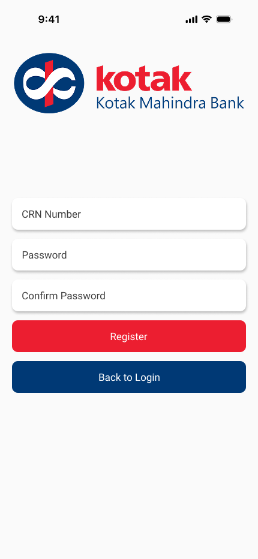
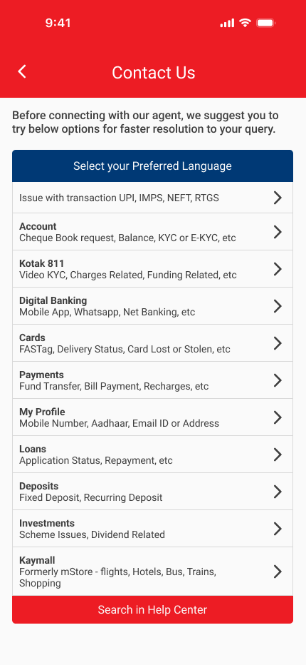

Kotak Mahindra Bank App
Kotak Mahindra Bank’s mobile banking application enables customers to manager their accounts, check balances, transfer funds and perform everyday financial tasks digitally. While using the app personally, I noticed several usability issues that made the experience feel cluttered and overwhelming, particularly for new users. Important information such as account balance and frequent actions like transfers or bill payments were not immediately accessible. This project explores a UX audit and redesign of the app, focusing on simplifying navigation and improving information hierarchy.
Problem Statement
Many banking apps present users with a large amount of financial information and features at once. In the case of the Kotak Mahindra Bank mobile app, the interface felt visually cluttered and difficult to navigate, especially for users who want to quickly perform everyday tasks.
Key Issues Identified
- Account balance and financial overview were not immediately visible
- Important actions like money transfer and bill payments required multiple steps
- Navigation felt overwhelming for new users
- Weak visual hierarchy made it difficult to prioritize information
Design Goals
Based on the usability issues identified, the redesign focused on the following goals:
- Simplify the dashboard layout
- Improve information hierarchy
- Surface frequent actions for faster access
- Reduce cognitive load during everyday banking tasks
- Create a cleaner and more intuitive interface
UX Audit of the Existing App
To better understand the problems, I conducted a UX critique of the existing app. This involved analyzing the current interface and identifying usability issues related to layout, navigation and information hierarchy.
- The dashboard contained multiple competing elements without clear priority
- Promotional banners took up significant screen space
- Key financial information was not emphasized
- Navigation required multiple steps to access common features
Ideation & Exploration
After identifying the usability issues, I began exploring ways to improve the overall structure of the app. The main focus during ideation was to prioritize clarity and accessibility of key financial information.
- A simplified dashboard layout
- Quick access to frequent actions
- Clear financial overview
- Better grouping of related features
Final Design
The final design focuses on creating a cleaner, more intuitive banking experience by prioritizing important financial information and simplifying navigation.
- A simplified dashboard with clear financial overview
- Quick access to common actions like transfers and bill payments
- Improved visual hierarchy to highlight important information
- Reduced interface clutter





Reflections & Learnings
This project was one of my early explorations into UI/UX design and was primarily driven by personal experience. Through this project, I learned the importance of information hierarchy, simplicity and clarity when designing fintech products. If I were to revisit this project today, I would expand the process by conducting user interviews and usability testing to validate design decisions.